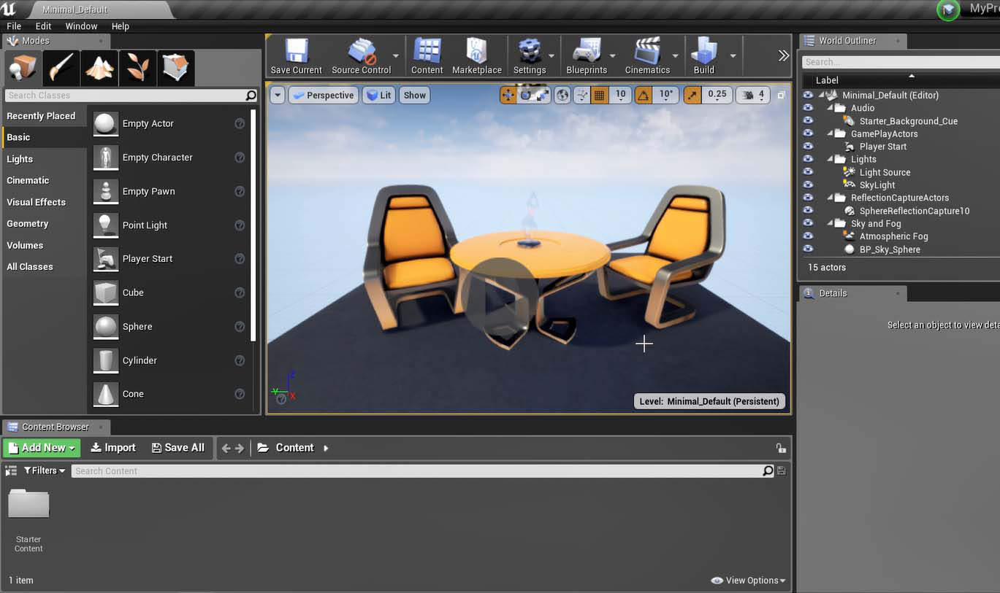
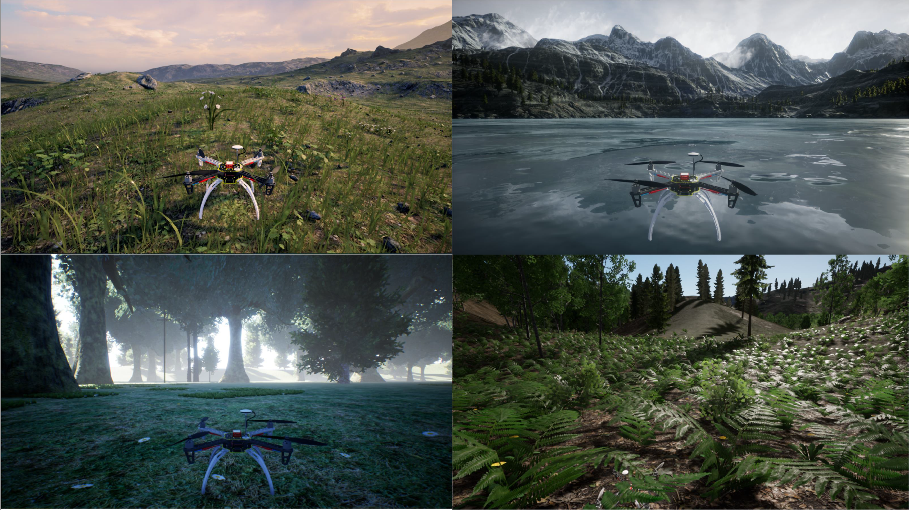
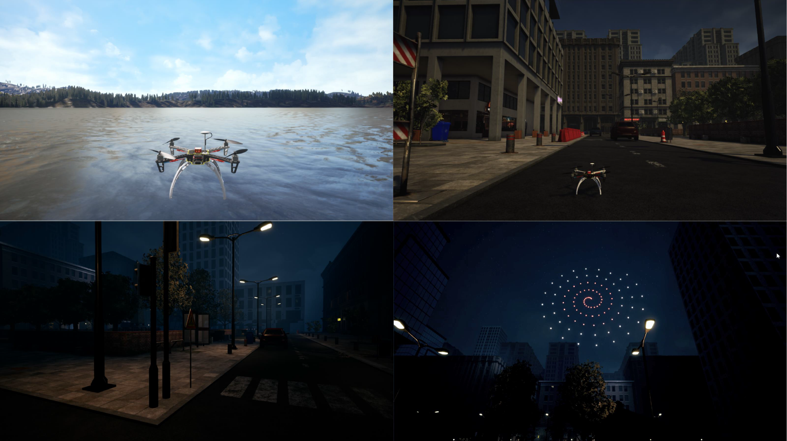
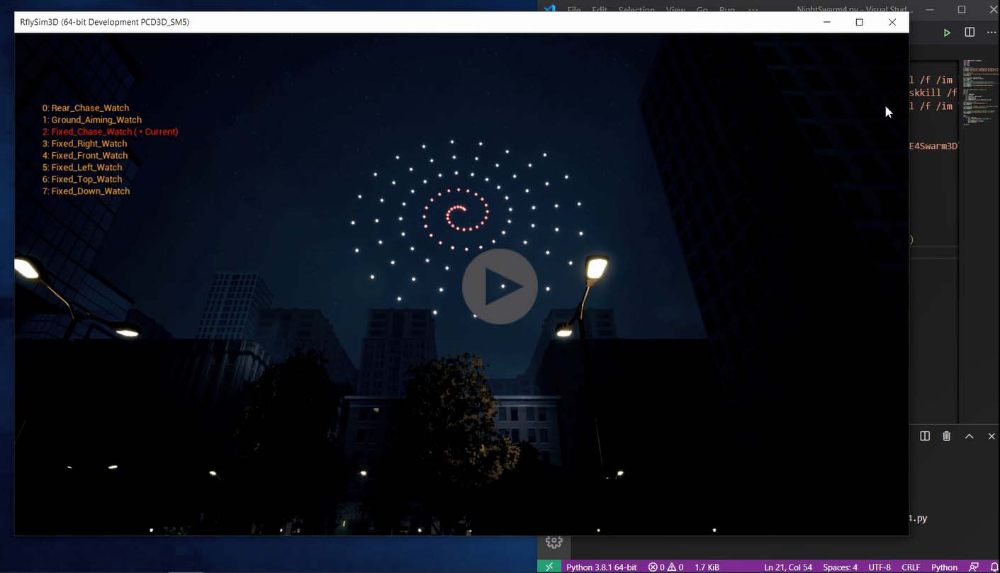
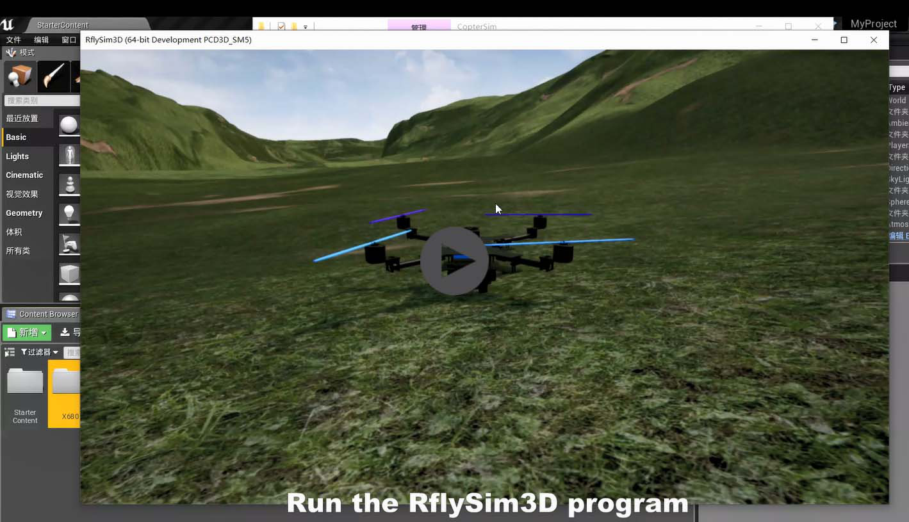
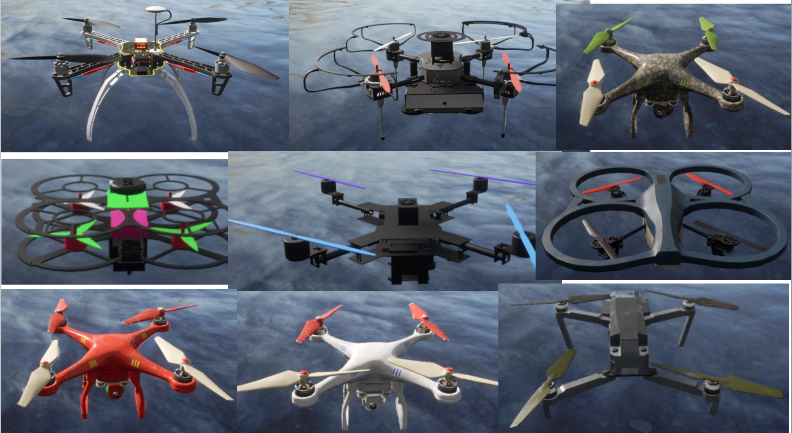
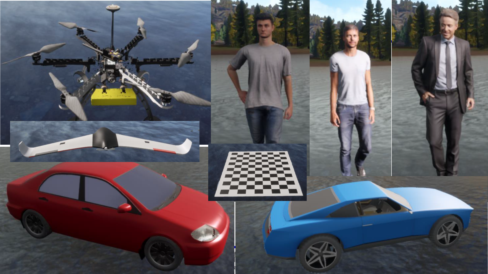
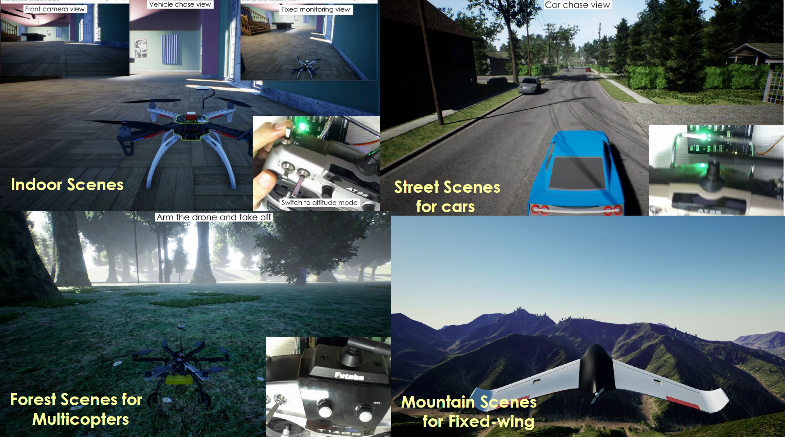

4. Customization of 3D Scenarios¶
4.1. Design and Import 3D Scenarios¶
RflySim3D also support to design and import your own 3D scenes, the basic principle is listed as follows:
- Create a 3D Scene in 3Ds Max (or imported from AutoCAD, SketchUp by fbx file) -> imported to UE4 -> imported to RlfySim3D
- Procedure: UE4 build and package project to files -> copy the scene folder to RflySim3D content folder -> Copy terrain files to CopterSim
In the following video, the procedure to import a quadcopter 3D model from 3Ds Max is introduced.
RflySim Advance Function: How to import your own 3D vehicle models to the UE4-based RflySim3D program
The following figures present the built-in high-fidelity 3D scenes in RflySim3D:

The following video presents how to use Python to send vehicle position&trajectory to RflySim3D’s city night scene to observe the light show effect.
RflySim Advance Function: How to use RflySim3D to simulate light show of UAV swarm flying at city night
4.2. Design and Import Vehicle 3D Models¶
RflySim3D also support to design and import your own 3D vehicle models, the basic principle is listed as follows:
- Support to import all vehicle/target/people/obstacle in UE4, then RflySim3D will detect and import UE4 model file and XML configuration file
- Create a 3D model in 3Ds Max (or imported from AutoCAD, SketchUp by fbx file), then import it to UE4 with writing an XML file, and finally recognized by RlfySim3D
In the following video, we present the procedure to import the 3D model of a quadcopter from 3Ds Max with the XML file from our template.
RflySim Advance Function: How to import your own 3D vehicle models to the UE4-based RflySim3D program
The figures below present the build-in high-fidelity vehicle/car/people/target 3D models in RflySim3D.
